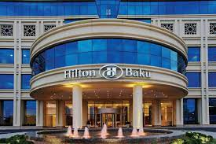
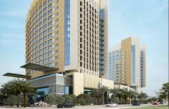

Hilton
Hilton is a well-known and trusted hotel brand that offers a variety of accommodations to suit the needs of all travelers. From luxury resorts to budget-friendly hotels, Hilton has something for everyone.
Working Hours
Sun - Sat 6:00am - 4:00am

Mövenpick Hotel
Mövenpick Hotel City Star Jeddah believes in indulgence done right, treating our guests to deliciously fresh cuisine, abundant treats and flavours that are unmistakably Mövenpick., Relax by dining in the elegant all-day restaurant, enjoy coffee with pastries in the lobby café and soak up the poolside atmosphere on the rooftop terrace, all while staying with us in Jeddah.
Working Hours
Sun - Sat 6:00am - 4:00am
Clarion Hotel
Boasting a convenient location in Jeddah at only 1 mile away from King Abdulaziz International Airport, Clarion Hotel Jeddah Airport is an excellent base for all travelers visiting Saudi Arabia for business or holidays. Strategically situated at a short distance from many local attractions, the hotel is a perfect gateway for pilgrimages to holy cities Mecca and Medina and offers all the comforts you need to make your stay in Jeddah hassle-free.
Working Hours
Sun - Sat 6:00am - 4:00am